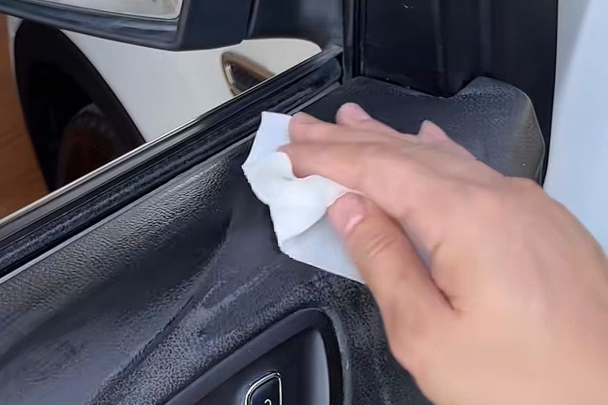

Chuẩn bị bề mặt nhựa trước khi sơn
Phần nhìn thấy sau cùng là màu sơn, nhưng độ ổn định của công việc lại phụ thuộc nhiều vào những bước phía dưới. Bề mặt còn dầu, hóa chất dưỡng hoặc lớp cũ yếu có thể làm giảm độ bám.

1. Đánh giá trước khi xử lý
Xác định vật liệu, lớp hoàn thiện hiện có, vết nứt, trầy xước và khu vực thường xuyên cọ xát. Nếu chi tiết hư hỏng kết cấu, cần sửa phần nền trước khi nghĩ đến lớp màu.
2. Làm sạch đúng mục đích
Loại bỏ bụi bẩn và chất chăm sóc bề mặt. Chất làm sạch phải phù hợp với vật liệu và hệ sơn dự kiến sử dụng. Sau khi làm sạch, tránh chạm tay trực tiếp vào vùng sẽ thi công.
3. Xử lý lớp cũ
Lớp hoàn thiện bong, nứt hoặc mất bám cần được xử lý đến vùng ổn định. Mức độ chà nhám và vật liệu lót phụ thuộc vào bề mặt cụ thể; không nên áp dụng một thông số cố định khi chưa có hướng dẫn sản phẩm.
4. Thử mẫu
Thử trên vùng kín giúp kiểm tra phản ứng với lớp cũ, khả năng lên màu và mức độ phù hợp của quy trình. Chỉ tiếp tục khi mẫu thử ổn định.
5. Ghi lại công việc
Với gara, nên ghi mã sản phẩm, màu, vật tư đã dùng và ngày thi công. Hồ sơ này giúp kiểm soát chất lượng và xử lý bảo hành rõ ràng hơn.